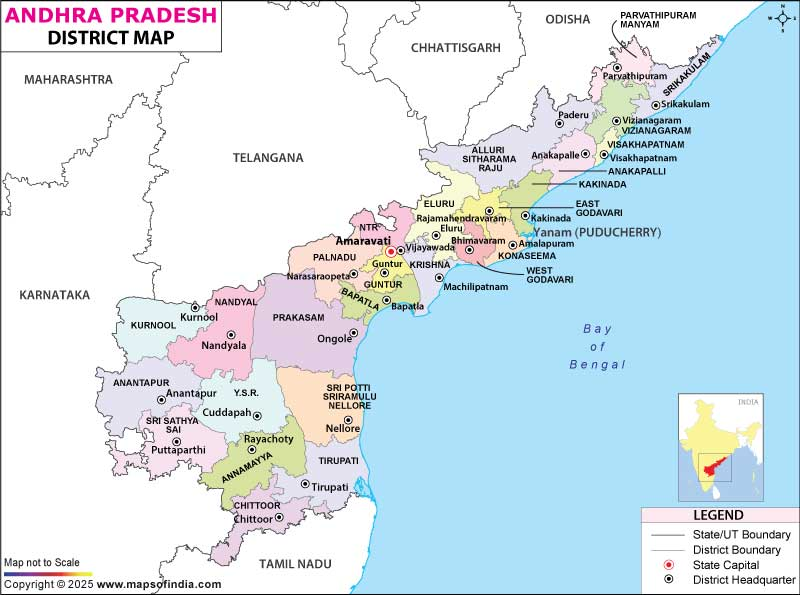

A delicious journey through Tenali, Guntur, Vijayawada & more

Andhra Pradesh is not just known for its culture and temples, but also for its bold flavors and unforgettable food. Every town has a special dish that reflects its identity. This blog explores some famous foods from popular Andhra places that every food lover must try.
Tenali is famous for its crispy and juicy Jalebi. Unlike regular jalebis, Tenali jalebis are known for their perfect crunch and rich sugar syrup.
Whether it’s early morning or evening, the aroma of fresh jalebis near local shops makes it impossible to resist. For many people, a trip to Tenali feels incomplete without tasting them.
Guntur is world-famous for its spicy Guntur Mirchi. This chili is not just hot, but also rich in color and flavor.
From pickles to curries, Guntur mirchi plays a key role in Andhra cuisine. It represents the bold and fiery food culture of the region.
Vijayawada is well known for its tasty street snack, Punugulu. These deep-fried crispy balls are made from fermented dosa batter.
Served hot with coconut chutney and spicy ginger chutney, punugulu are a favorite evening snack for locals and visitors alike.
Food in Andhra Pradesh is more than just taste—it is tradition, emotion, and identity. Each place has its own signature dish that tells a story. Exploring Andhra through its food is one of the best ways to truly experience its culture.